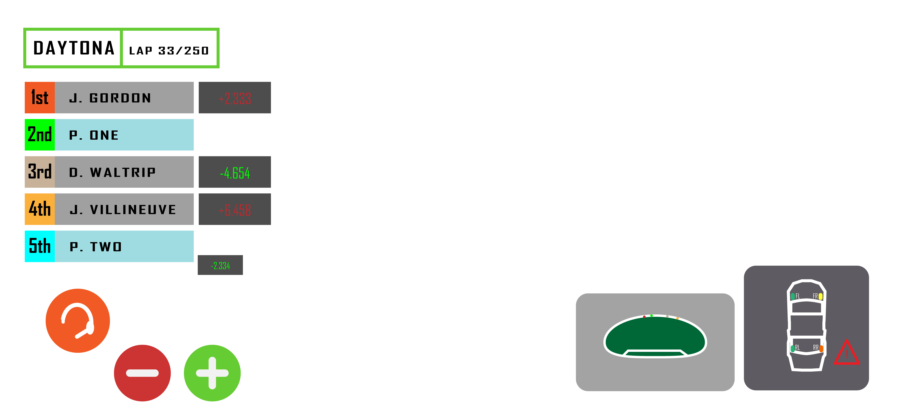

{kind=link}
CTK 353 Playing Card Design These card designs are simple, taking inspiration from art deco of the 1920s, with stylish fonts and angles galore. This was part of a larger assignment by CTK 354 where students would design unique card designs, with some opting for expressionism, and some even changing the form of the cards to fit another goal entirely. I very much like the stripe and dark grey background, it adds a lot of character to an otherwise barren card. It can still be added too though, with a border around the outside and perhaps specific cards like the king having a black and gold color to them to signify royalty, or the ace having a golden suit symbol to signify the importance of the ace in games like Blackjack.
{kind=link}
CTK 353 RTS Assets One of my earliest obessions was motorsport, specifically NASCAR racing, a form of American stock car racing that became extremely popular around the 90s and 2000s. I had a bus driver who introduced me to it through telling me about her favorite driver. Since then I have had all types of motorsport in the back of my head, but I never really got into motorsport as an young adult until my senior year in high school, when I downloaded F1 2017 as a free 3 day trial on the week of the inagural race of the 2018 season. Since then I've gotten back into motorsport and reconnected with a much different form of NASCAR. One thing that is lacking in the sport from other racing leagues like Formula 1 or Le Mans is the representation of a good video game series, especially one that focuses on the management of a team throughout a weekend. I was given the task to create an RTS for mobile, but didn't like the idea of making another war game RTS that had been done so many times before. So I decided to create an RTS that focuses on managing your team of 3 to 4 drivers over the course of a NASCAR race, calling the shots on passing, drafting, pit stops, and even a little roughousing other drivers. This is not new, there is even a game much like mine that focuses on all kinds of motorsports, but this one is specific to the unique style of American stock car racing that NASCAR popularized to the nation, and the world.
{kind=link}
CTK 353 Endless Runner This was a group project with CTK classmate Gabe Fulk, where we were tasked with making assets for a game around the theme of "dont stop running," which we would assemble menus through Adobe XD. We decided to make an Endless Runner rhythm game inspired by 'vaporwave aesthetics' which are based on 80s and 90s advertising artwork used in pop culture, spread through shopping malls and clothing. Gabe made the prototype menus, and I made the assets for the buttons and the player icon. In whole, this project was a great look into working in a team, and it definetly helped to have a great partner like Gabe who took command of the prototyping phase of the project.